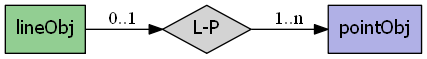

mapscript.lineObj¶
- class mapscript.lineObj¶
A
lineObjis composed of one or morepointObjinstancesOverview
The lineObj has the following relationships:
Attributes
numpointsint immutable Number of points in the line
thisownThe membership flag
Methods
- add(p: pointObj) int[source]¶
Add point p to the line. Returns
MS_SUCCESSorMS_FAILURE
- project(*args) int[source]¶
Overload 1: Transform line in place from proj_in to proj_out. Returns
MS_SUCCESSorMS_FAILUREOverload 2: Reproject line given a reprojection object. Transformation is done in place. Returns
MS_SUCCESSorMS_FAILURE
- set(i: int, p: pointObj) int[source]¶
Set the point at index i to point p. Returns
MS_SUCCESSorMS_FAILURE